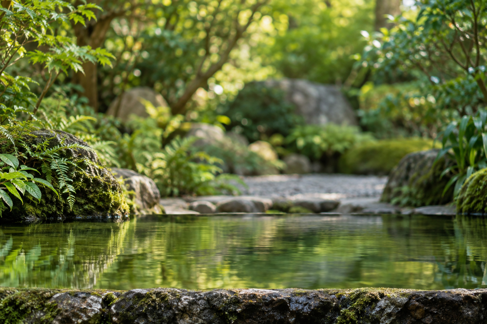

Drag the bamboo
Lower to pour. Lift to stop.Use the up and down arrow keys to raise and lower the bamboo. Home lowers it fully; End raises it fully. You can also use the Bamboo height slider below.
Preparing the garden…
LowerHigher
Gentle flow